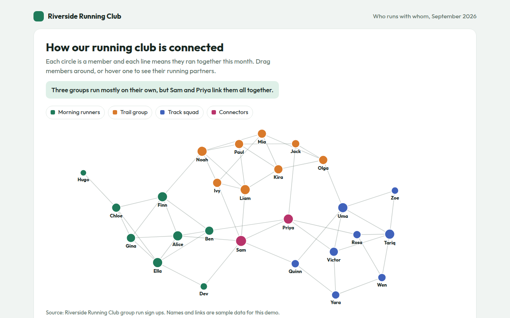
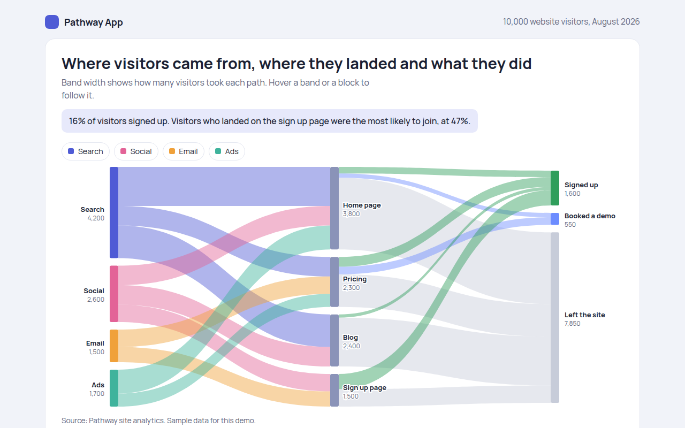
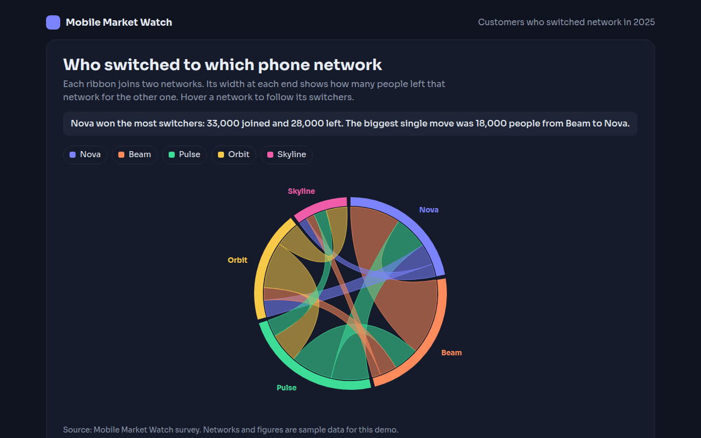
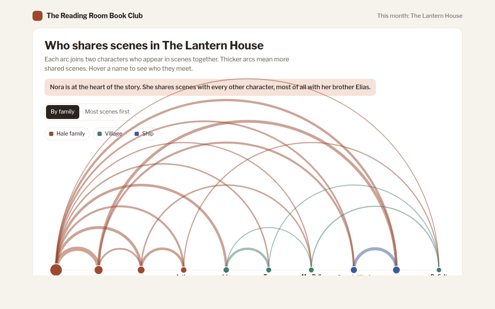
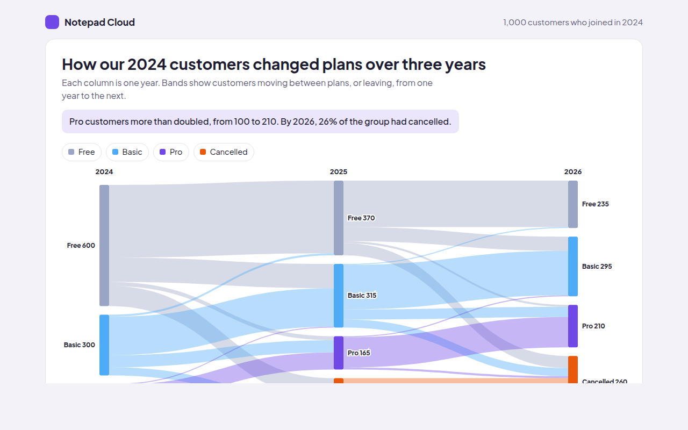
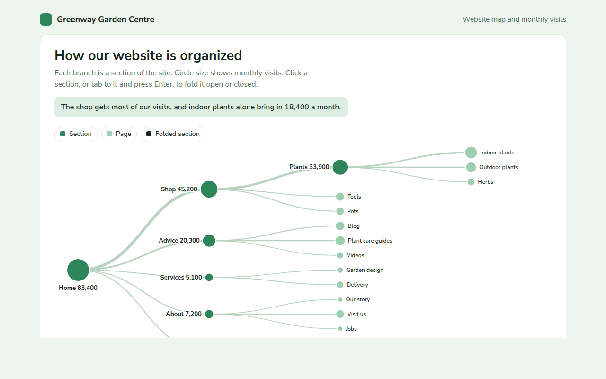
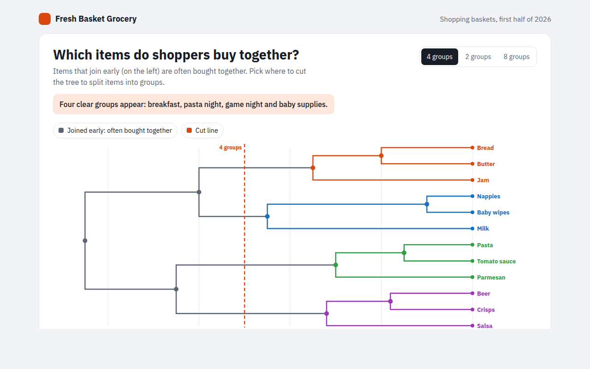
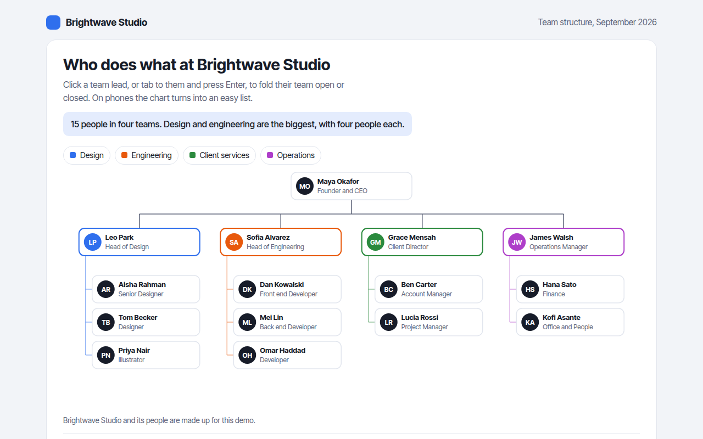
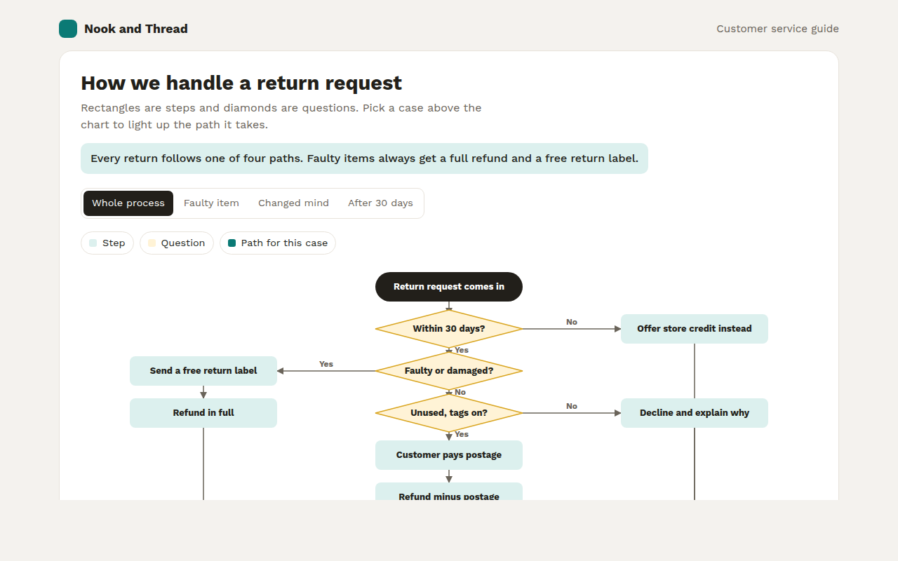
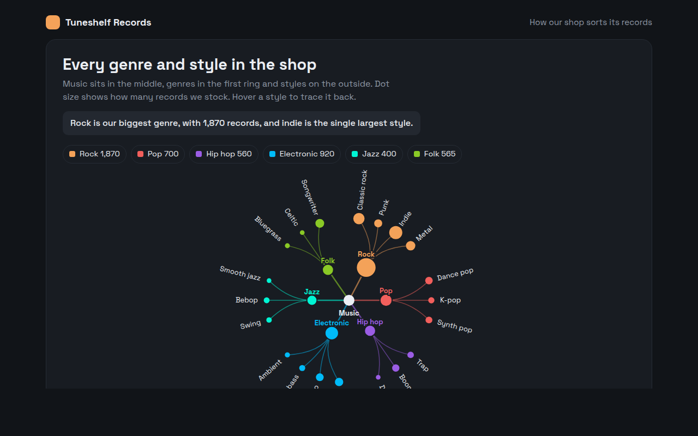

Home / Flow and Network / Network Graph
Network Graph in HTML, CSS and JavaScript
A network graph shows things as dots, called nodes, and the links between them as lines. This free template draws one with plain SVG and vanilla JavaScript, no chart library. The example shows who runs with whom in a running club.

What is a network graph?
A network graph shows things as dots, called nodes, and the links between them as lines. A force directed layout pushes all nodes apart and pulls linked nodes together, so tight groups form on their own.
It reveals the shape of a network: close knit groups, loners and the few people who link groups together. In this example, two members connect three groups that would otherwise barely meet.
At a glance
- Best for
- Seeing groups and key connectors in a network
- Data you need
- A list of items and a list of links
- Skip it when
- Very large networks without filtering.
- Made with
- HTML, CSS and vanilla JavaScript. No library.
When to use a network graph
- Friends, members or team connections
- Websites that link to each other
- Products that are bought together
- Emails or messages between people
When to pick another chart
- Arc Diagram: you want a tidy layout with readable labels
- Chord Diagram: links have amounts and directions between a few groups
What you get in this template
- A force simulation written in about 20 lines of JavaScript
- Nodes colored by group and sized by number of partners
- Drag any member to rearrange the graph
- Hover a member to light up only their running partners
- The layout fits any screen size
- A table sorted by the most connected members
How the code works
Here is a short version of the idea behind this network graph. The full file adds the axis, labels, tooltips, sorting and resizing on top of it.
const nodes = [{}, {}, {}, {}, {}].map(() => ({ x: 200 + Math.random() * 100, y: 150 + Math.random() * 100 }));
const links = [[0, 1], [1, 2], [2, 0], [2, 3], [3, 4]];
for (let step = 0; step < 300; step++) {
nodes.forEach((a, i) => nodes.forEach((b, j) => { // push apart
if (i >= j) return;
const dx = b.x - a.x, dy = b.y - a.y, d2 = dx * dx + dy * dy + 0.1, f = 400 / d2;
a.x -= dx * f; a.y -= dy * f; b.x += dx * f; b.y += dy * f;
}));
links.forEach(([i, j]) => { // pull linked nodes together
const a = nodes[i], b = nodes[j], dx = b.x - a.x, dy = b.y - a.y, f = 0.02;
a.x += dx * f; a.y += dy * f; b.x -= dx * f; b.y -= dy * f;
});
}
links.forEach(([i, j]) => drawLine(nodes[i].x, nodes[i].y, nodes[j].x, nodes[j].y, '#9aa'));
nodes.forEach(n => drawCircle(n.x, n.y, 10, '#1f7a5a'));The example uses four tiny helpers that create SVG shapes. Put them above the code and it runs as is.
const svg = document.querySelector('svg');
function make(tag, attrs) {
const n = document.createElementNS('http://www.w3.org/2000/svg', tag);
for (const k in attrs) n.setAttribute(k, attrs[k]);
svg.appendChild(n);
return n;
}
function drawRect(x, y, width, height, fill) { return make('rect', { x, y, width, height, fill }); }
function drawCircle(cx, cy, r, fill) { return make('circle', { cx, cy, r, fill }); }
function drawLine(x1, y1, x2, y2, stroke, width, dash) {
return make('line', { x1, y1, x2, y2, stroke, 'stroke-width': width || 1, 'stroke-dasharray': dash || 'none' });
}
function drawText(x, y, str, anchor) {
const t = make('text', { x, y, 'text-anchor': anchor || 'start' });
t.textContent = str;
return t;
}How to add it to your website
- Download the file. Click Download HTML file above. You get one file called network-graph.html with everything inside.
- Change the data. Open the file in any code editor and find the DATA list near the bottom. Replace the names and numbers with your own.
- Change the colors and text. Colors are at the top of the style tag. The title, subtitle and main point are plain HTML near the top of the body.
- Put it online. Upload the file to any host, such as GitHub Pages, Netlify or your own server, or paste it into your site. There is no build step.
Questions people ask
What is a force directed graph?
It is a network layout where nodes push away from each other and links pull connected nodes together, like springs. After many small steps, the layout settles into clear groups.
How many nodes can a network graph show?
A few hundred in the browser. For larger networks, filter to the part that matters or group nodes together.
Can I drag the nodes?
Yes. Grab any member and move them. The lines follow so you can untangle the view or pull a group apart.
What does a node in the middle of two groups mean?
It usually marks a connector: someone who links groups that would otherwise not meet. In the example, Sam and Priya play that role.
More flow and network

051. Sankey Diagram
Example: website visitors from source to landing page to outcome
052. Chord Diagram
Example: customers switching between five phone networks
053. Arc Diagram
Example: characters who share scenes in a novel
055. Alluvial Diagram
Example: customers changing plans over three years
056. Tree Diagram
Example: a garden centre website map with monthly visits
057. Dendrogram
Example: grocery items that shoppers buy together
058. Org Chart
Example: the team structure of a design studio
059. Flowchart
Example: how an online shop handles a return request